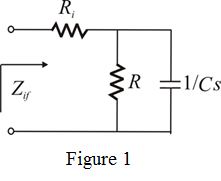
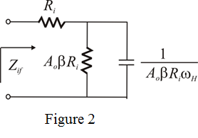
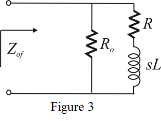
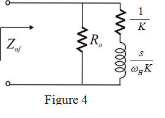

Step 1:
Open loop gain  is,
is,
…… (1)
Series-shunt amplifier has an input resistance an output resistance .
.
Thus, input resistance is also valid for the case where open loop gain  is the function of frequency. So,
is the function of frequency. So,
Output resistance is also valid for the case where open loop gain A is the function of frequency. So,
Here,
Feedback factor  is the independent of frequency.
is the independent of frequency.
Step 2:
Find input resistance (function of frequency).
Substitute for  in the equation.
in the equation.
 ……. (2)
……. (2)
Step 3:
Draw equivalent circuit for the input impedance in  -domain.
-domain.

Step 4:
Equivalent input impedance for Figure 1 is,
Rewrite the equation.
…… (3)
Compare equation (2) and (3).
Replace  and
and  in the equivalent circuit.
in the equivalent circuit.

Step 5:
Find output resistance
Substitute for  in the equation.
in the equation.
Rewrite the equation.
…… (4)
Here
Step 6:
Draw the equivalent circuit in  domain.
domain.

Step 7:
Find the equivalent impedance for the circuit.
Rewrite the equation.
…… (5)
Equate (4) and (5) equations.

And
Thus the equivalent circuit for is,

Thus, equivalent circuit for the input impedance and output impedance for the feedback amplifier has been designed.